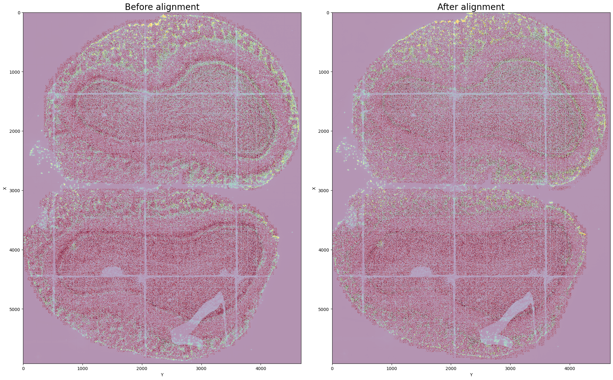
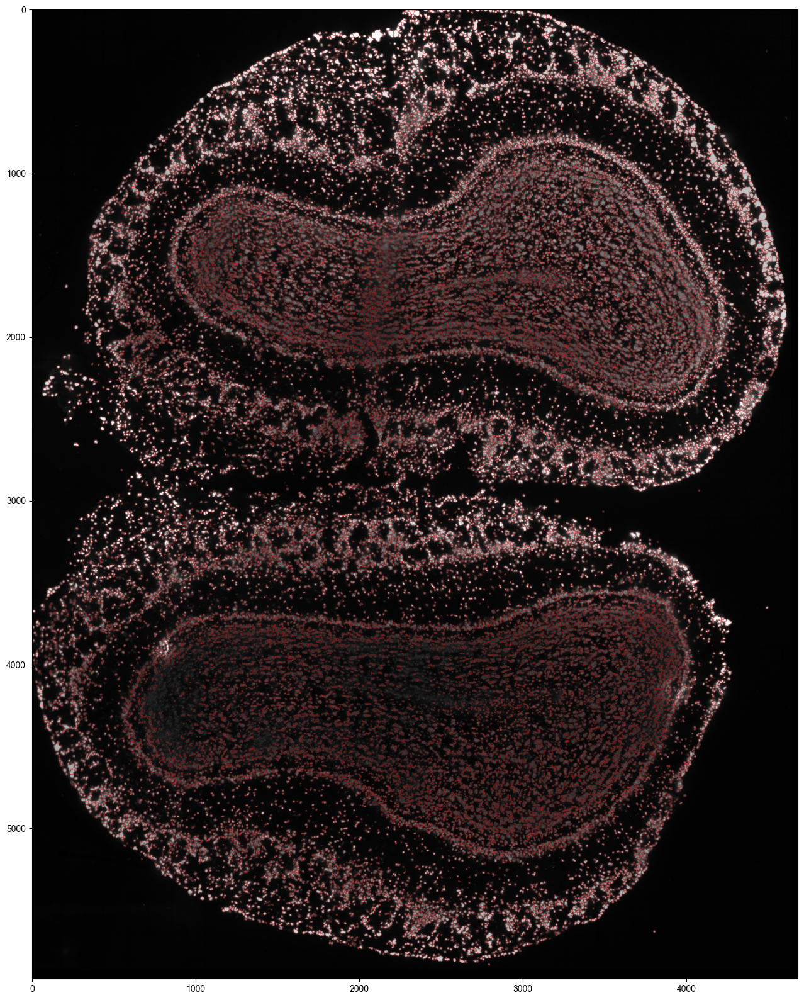

Mouse olfactory bulb (Stereo-seq)¶
In this tutorial, we demonstrate the use of Cellist on a mouse olfactory bulb dataset profiled by Stereo-seq (Chen et al., Cell, 2022). The dataset includes both spatial transcriptomics data and a corresponding ssDNA staining image. Processed data for this example can be downloaded from here.
Step 1 Registration of staining image and spatial expression profile¶
Although the staining images are approximately aligned with RNA coordinates, small shifts may still occur.
The align command can be used to refine this alignment. It integrates the refine_alignment function with the rigid mode in Spateo.
This step typically takes about 2 minutes to complete.
cd location_to_Cellist_demo_data/Cellist_demo_data/Stereoseq_Mouse_OB
tar -xvzf Data/DP8400013846TR_F5.bin1.olfactorybulb_cropped.gem.tar.gz -C Data/
cellist align --gem Data/DP8400013846TR_F5.bin1.olfactorybulb_cropped.gem \
--tif Data/ssDNA_cropped_3625_9545_950_5630.tiff \
--nworkers 8 \
--outdir Result/Alignment \
--outprefix DP8400013846TR_F5
{kind=link}

Step 2 Nucleus segmentation via Watershed¶
Nucleus segmentation is the first step before whole-cell segmentation in Cellist.
Here we use the watershed algorithm to identify nuclei from the ssDNA-stained image, implemented via the watershed command.
This step typically requires about 4 minutes.
cellist watershed --gem Data/DP8400013846TR_F5.bin1.olfactorybulb_cropped.gem \
--tif Result/Alignment/DP8400013846TR_F5_regist_transposed_aligned_by_Spateo.tiff \
--min-distance 6 \
--outdir Result/Watershed \
--outprefix DP8400013846TR_F5
{kind=link}

Step 2 (Optional) Nucleus segmentation via Cellpose¶
As an alternative—particularly useful for dense tissues—users can apply cellpose, which employs a deep learning model for nucleus segmentation.
On an NVIDIA GeForce RTX 3090 GPU, this step takes approximately 5 minutes.
cellist cellpose --gem Data/DP8400013846TR_F5.bin1.olfactorybulb_cropped.gem \
--tif Result/Alignment/DP8400013846TR_F5_regist_transposed_aligned_by_Spateo.tiff \
--diameter 10 \
--expansion \
--expansion-dist 9 \
--outdir Result/Cellpose \
--outprefix DP8400013846TR_F5
Step 3 Cell segmentation by Cellist¶
After nucleus segmentation, Cellist expands the nucleus boundaries to include the cytoplasmic region, thereby generating complete cell segmentation. Both gene expression similarity and spatial proximity are considered when assigning non-nuclear spots to nuclei. On a high-performance system, this step takes about 10 minutes.
cellist seg --platform barcoding \
--resolution 0.5 \
--gem Data/DP8400013846TR_F5.bin1.olfactorybulb_cropped.gem \
--spot-count-h5 Result/Watershed/DP8400013846TR_F5_bin1.h5 \
--nucleus-seg-method Watershed \
--nucleus-prop Result/Watershed/DP8400013846TR_F5_Watershed_nucleus_property.txt \
--nucleus-count-h5 Result/Watershed/DP8400013846TR_F5_Watershed_segmentation_cell_count.h5 \
--nucleus-seg Result/Watershed/DP8400013846TR_F5_Watershed_nucleus_coord.txt \
--nworkers 16 \
--cell-radius 15 \
--spot-imputation-distance 2.5 \
--outdir Result/Cellist \
--outprefix DP8400013846TR_F5
Alternatively, Cellist segmentation can also be performed using nuclei obtained from Cellpose.
cellist seg --platform barcoding \
--resolution 0.5 \
--gem Data/DP8400013846TR_F5.bin1.olfactorybulb_cropped.gem \
--spot-count-h5 Result/Cellpose/DP8400013846TR_F5_bin1.h5 \
--nucleus-seg-method Cellpose \
--nucleus-prop Result/Cellpose/DP8400013846TR_F5_Cellpose_nucleus_property.txt \
--nucleus-count-h5 Result/Cellpose/DP8400013846TR_F5_Cellpose_segmentation_cell_count.h5 \
--nucleus-seg Result/Cellpose/DP8400013846TR_F5_Cellpose_nucleus_coord.txt \
--nworkers 16 \
--cell-radius 15 \
--spot-imputation-distance 2.5 \
--outdir Result/Cellist_cellpose \
--outprefix DP8400013846TR_F5
The outputs of seg are stored in the Result/Cellist folder. A description of the output files is provided below:
File |
Description |
|---|---|
Data_HVG/ |
Directory containing small patches cropped from the slide. |
{outprefix}_Cellist_segmentation.txt |
Spot-level segmentation result, where each row represents a spot. |
{outprefix}_Cellist_segmentation_cell_count.h5 |
Aggregated cell-level expression matrix in h5 format; rows are genes, columns are cells. |
{outprefix}_Cellist_segmentation_cell_coord.txt |
Spatial coordinates of segmented cells, corresponding to the expression file. |
{outprefix}_Cellist_segmentation_plot.pdf |
Visualization of cell segmentation results. |
{outprefix}_Cellist_corr_nucl_cyto_df.txt |
Correlation of expression between nucleus and cytoplasm within each cell. |
parameters.json |
Parameters used to run |